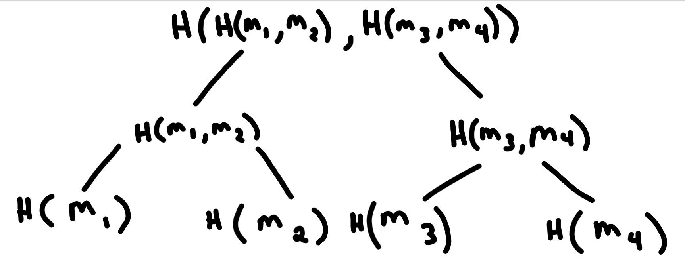
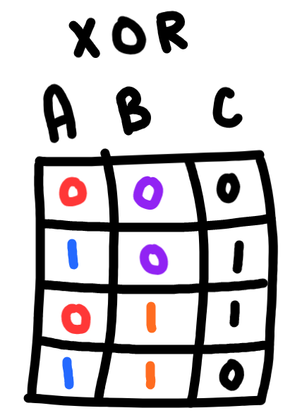
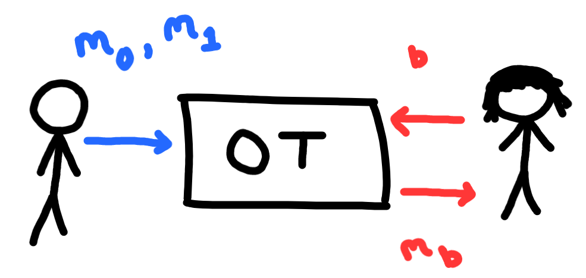
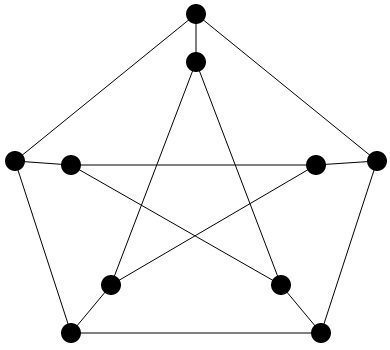
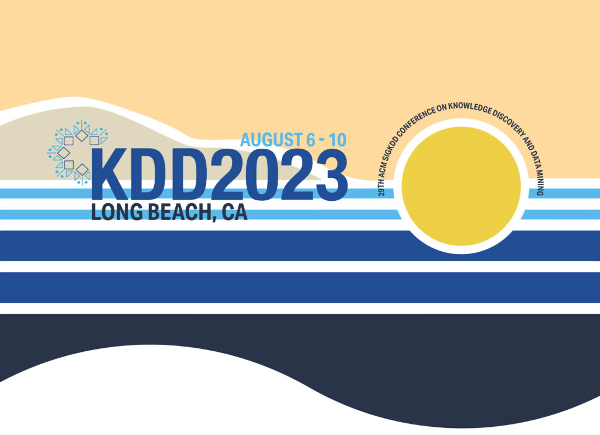
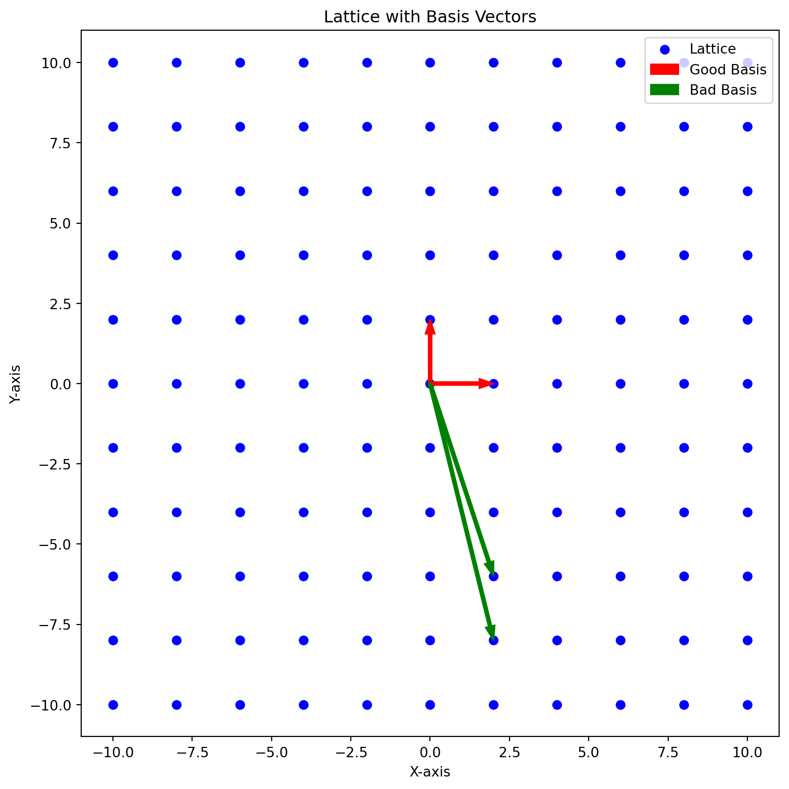
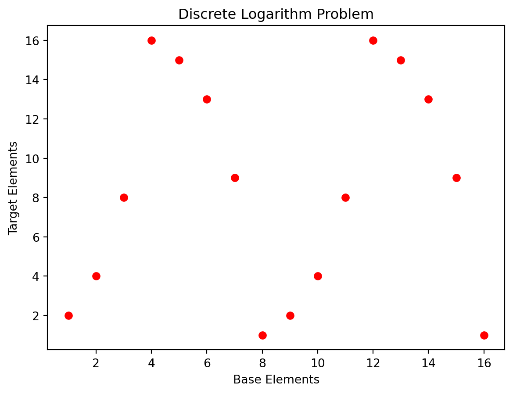
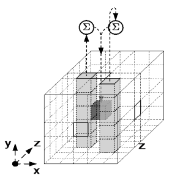
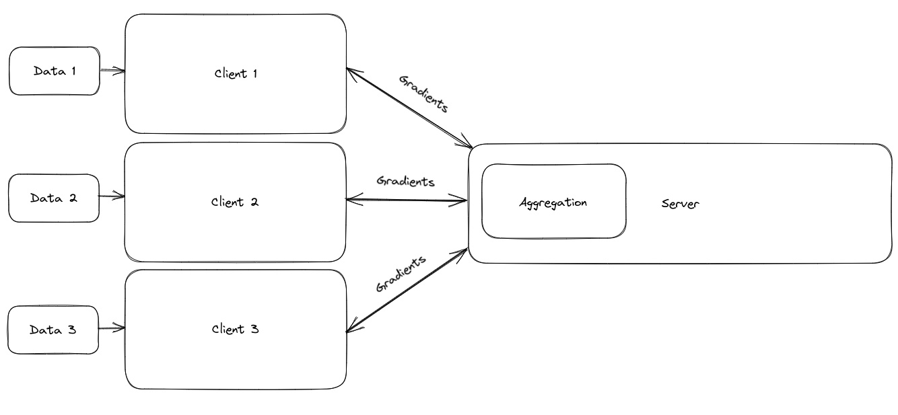

Trevor’s Website
About
Categories
All
(17)
algorithms
(1)
cryptography
(13)
machine learning
(1)
mathematics
(1)
news
(2)

Merkle Trees
cryptography
In the world of cryptography and blockchain technology,
Merkle trees
are a crucial data structure that plays a significant…
Jul 25, 2023
Trevor Tomlin
Fast Fourier Transform
mathematics
algorithms
The
Fast Fourier Transform
is a divide and conquer algorithm for computing the discrete Fourier transform of a sequence, or its inverse. Fourier analysis converts a signal from its original domain…
Jul 18, 2023
Trevor Tomlin
Verifiable Delay Functions
cryptography
A
Verifiable Delay Function
(VDF) is a computational primitive that introduces a time delay in evaluating a function while providing proof of its correctness. In simple terms, it is a function that…
Jul 11, 2023
Trevor Tomlin

Yao’s Garbled Circuits
cryptography
Yao’s Garbled Circuits is a cryptographic protocol introduced by Andrew Yao in 1982 that…
Jun 28, 2023
Trevor Tomlin

Oblivious Transfer
cryptography
Oblivious Transfer
(OT) is a cryptographic protocol that allows one party, often referred to as the sender, to send a set of private messages to another party, known as the…
Jun 26, 2023
Trevor Tomlin
Shamir’s Secret Sharing
cryptography
In the digital age, securing sensitive information is crucial.
Shamir’s Secret Sharing
(SSS) is a cryptographic technique that provides a way to distribute a secret among multiple parties, ensuring that the secret can only be reconstructed when a sufficient…
Jun 25, 2023
Trevor Tomlin

Zero Knowledge Proofs
cryptography
Zero knowledge proofs
(ZKPs) are a way for a prover to prove that they have knowledge of a secret without revealing the secret itself. This is done by having the prover convince the verifier…
Jun 24, 2023
Trevor Tomlin

Paper accepted into KDD 2023 Undergraduate Consortium
news
I’m thrilled to share that our paper has been accepted for presentation at the prestigious KDD conference. It’s an honor to have our research recognized by the…
Jun 20, 2023
Trevor Tomlin
Learning With Errors
cryptography
The
Learning With Errors (LWE)
problem is a mathematical problem that plays a significant role in modern cryptographic schemes. It is based on the concept of…
Jun 16, 2023
Trevor Tomlin
Groups, Rings, and Fields
cryptography
Groups, fields, and rings are…
Jun 15, 2023
Trevor Tomlin
Introduction to Modular Arithmetic
cryptography
Modular arithmetic
is a fascinating branch of mathematics that deals with integers and their remainders. It has various applications in fields like cryptography, computer…
Jun 14, 2023
Trevor Tomlin

Shortest Vector Problem and Closest Vector Problem
cryptography
Lattice-based cryptography has emerged as a powerful tool in…
Jun 13, 2023
Trevor Tomlin
Integer Factorization Problem
cryptography
The integer factorization problem is a fundamental challenge in cryptography, with significant implications for the widely used RSA…
Jun 12, 2023
Trevor Tomlin

Discrete Logarithm Problem
cryptography
The
discrete logarithm problem
is a fundamental concept in the field of cryptography. It plays a crucial role in many encryption algorithms and…
Jun 10, 2023
Trevor Tomlin

Simple SHA-3
cryptography
Cryptographic algorithms such as Keccak play a crucial role in securing sensitive information, but they can often seem daunting and complex to understand. The National…
May 22, 2023
Trevor Tomlin

Federated Learning From Scratch
machine learning
Federated learning is a technique for machine learning that uses decentralized clients to train on…
May 9, 2023
Trevor Tomlin
Welcome To My Blog
news
This is the first post in a Quarto blog. Welcome!
May 7, 2023
Trevor Tomlin
No matching items